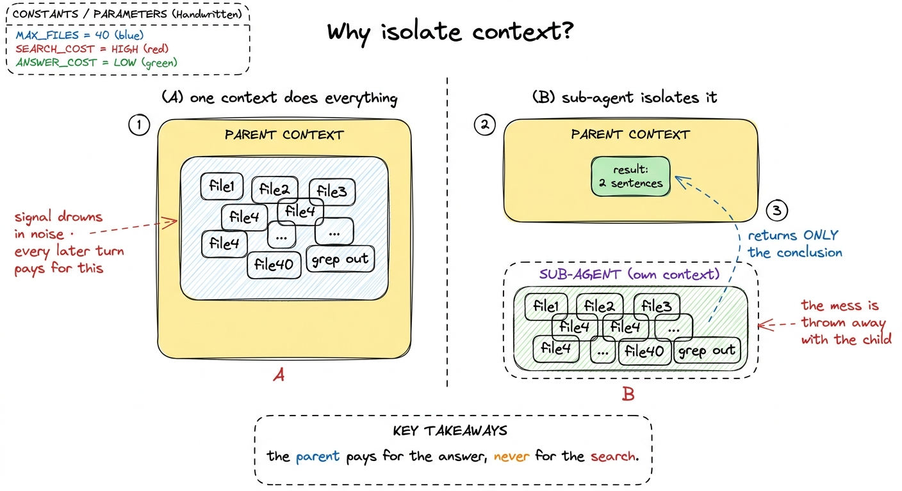
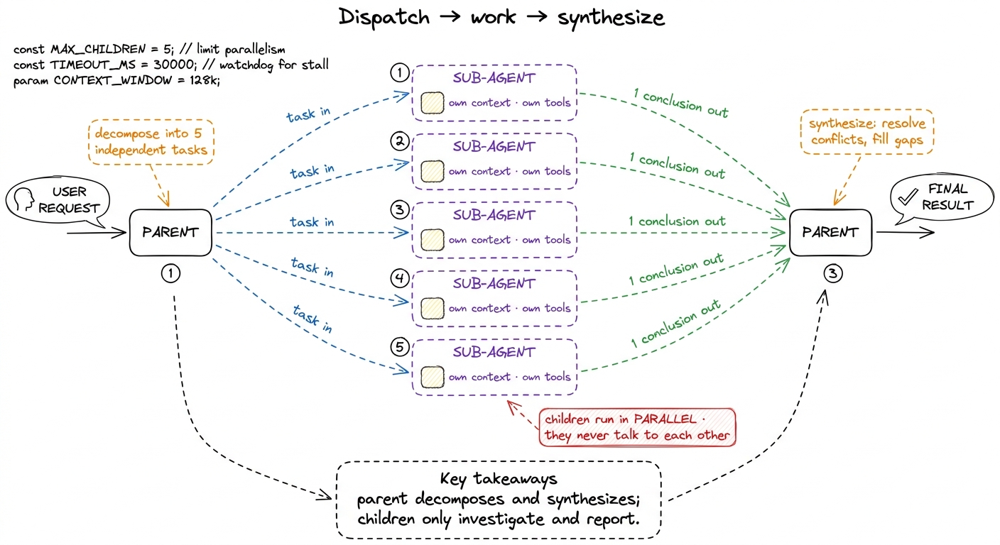
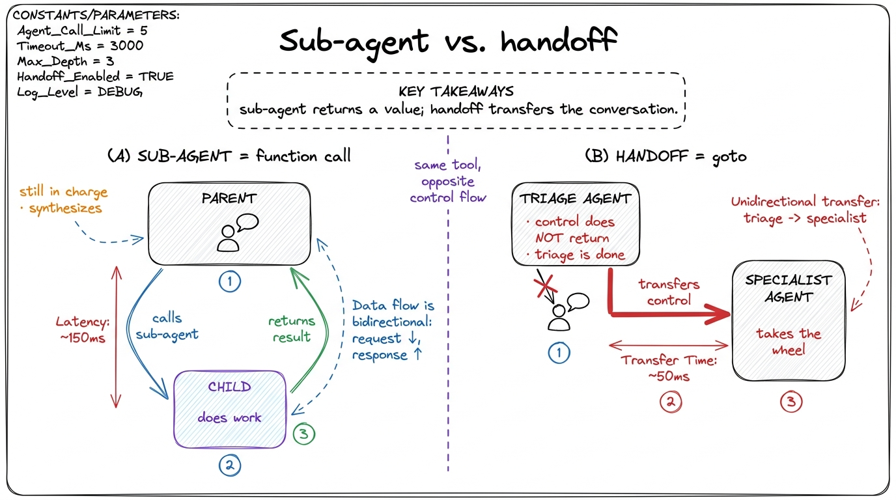

Sub-agents & handoffs
Every layer we have built so far assumes one thing: that a single conversation — one message array, one growing context window — is enough to hold the whole job. For most tasks it is. But eventually you will hand your harness something that doesn't fit in one head. "Find every place we call the old auth API, figure out which are safe to migrate, and write the migration." By the time the agent has grepped the codebase, read forty files, and reasoned about each one, the context window is a landfill of half-relevant tool output — and the model, drowning in it, starts to lose the plot.
The instinct is to buy a bigger window. That is the wrong instinct. The right move is the one every serious harness — Claude Code, pi, Hermes — reaches for at Layer 5: spawn a focused sub-agent with its own fresh context, let it do the messy work in private, and return only its conclusion. This chapter is about that move, and about its close cousin — the handoff, where instead of returning a result you hand control to a specialist entirely.
Why a fresh context beats a bigger one
Start with the failure so the fix makes sense. A context window is not just a size limit; it is a signal-to-noise budget. Every token the model reads competes for its attention. When you dump fifty files of grep output into one conversation so the model can answer one question about them, you have paid for that answer twice: once in tokens, and once in the model's degraded focus for everything that comes after. The conversation is now permanently heavier, and every later turn inherits the mess.1 This is the same scarcity we fought in Layer 3 with compaction. Compaction shrinks a context after it grows too big; a sub-agent prevents the growth by never letting the mess touch the parent context at all. They compose — a well-run harness does both.
A sub-agent inverts this. You give a child agent its own empty message array, its own tools, and one narrow instruction. It grinds through the forty files, fills its context with noise, arrives at a two-sentence answer, and then that child is thrown away — noise and all. Back in the parent, only the two sentences land. The expensive middle never existed as far as the parent is concerned. This is context isolation, and it is the whole point.

figure rendering · Left: one context absorbs all the search noise and degrades. Right: aThere is a second payoff, quieter but just as real: parallelism. Because each sub-agent is a self-contained conversation, you can run five of them at once — one per module, one per hypothesis — and they don't step on each other. A single context is inherently sequential; a fleet of sub-agents is not. This is exactly how Claude Code's Task tool and pi's spawn primitive let one request fan out into several investigators working simultaneously.
The smallest sub-agent that shows the idea
A sub-agent is not a new kind of object. It is the loop you already built, called recursively with a fresh message array. That is the entire trick, and seeing it in code deflates a lot of mystique.
We expose it to the parent model as just another tool — one called spawn_agent. From the parent's point of view, spawning a sub-agent looks identical to reading a file: it emits a tool call, we run it, we hand back a result. The parent never sees the child's internal turns.
def run_agent(user_request, tools, system, max_turns=50):
"""The same loop from Layer 1 — nothing new here."""
messages = [{"role": "user", "content": user_request}]
for _ in range(max_turns):
reply = call_model(messages, tools, system)
messages.append({"role": "assistant", "content": reply.content})
if reply.stop_reason != "tool_use":
return text_of(reply) # <- the child's final answer
messages.append({"role": "user", "content": run_tools(reply)})
return "sub-agent hit its turn budget"
def spawn_agent(args):
"""A tool the PARENT can call. Runs a full child loop in isolation."""
return run_agent(
user_request = args["task"], # the one narrow instruction
tools = SUBAGENT_TOOLS, # often a RESTRICTED tool set
system = SUBAGENT_SYSTEM, # "you are a focused investigator…"
max_turns = 20,
)That's it. spawn_agent runs a complete agent loop — the same loop from your first bare harness — on a brand-new messages list, and returns only the string the child produced at the end. The child's forty file reads live and die inside its own messages; they are garbage-collected the instant spawn_agent returns. The parent receives a tool_result containing two sentences, exactly as if it had called a very smart, very expensive function.
Notice the two lines worth pausing on. SUBAGENT_TOOLS is often a narrower tool set than the parent's — an investigator that only needs to read and grep should not be handed write_file.2 Restricting a sub-agent's tools is a blast-radius decision, the same reasoning as sandboxing in Layer 2. A read-only investigator literally cannot corrupt your repo, no matter how confused it gets. Give each sub-agent the least authority its job requires. And SUBAGENT_SYSTEM is a different system prompt — you are casting the child in a specific role, telling it to work fast, stay narrow, and end with a crisp conclusion rather than rambling.
Dispatch and synthesize: the parent's real job
If the child does the work, what does the parent do? Two things, and doing them well is what separates a useful orchestration from a confusing one.
First, dispatch: decompose the big task into narrow, independent sub-tasks and spawn a child for each. Independence is the key word. Sub-agents shine when the pieces don't need to talk to each other mid-flight — "audit each of these five services for the deprecated call" parallelizes beautifully because service A's audit doesn't depend on service B's. If the pieces do need to share state as they go, sub-agents are the wrong tool and you want one context instead.
Second, synthesize: collect the childrens' conclusions and do something with them. This is the step beginners skip, and skipping it wastes the whole pattern. The parent is not a dumb router that pastes five reports together. It reads the five conclusions, resolves contradictions, notices the gap none of them covered, and produces one coherent answer. The synthesis turn is where the parent's clean, uncluttered context earns its keep — it can reason clearly precisely because it never had to hold the raw material.
def investigate_codebase(question, targets):
# DISPATCH — one focused child per target, run in parallel
with ThreadPoolExecutor() as pool:
findings = list(pool.map(
lambda t: spawn_agent({"task": f"In {t}, {question}. Report only what you find."}),
targets,
))
# SYNTHESIZE — the parent reasons over conclusions, not raw output
summary = "\n\n".join(f"[{t}]\n{f}" for t, f in zip(targets, findings))
return call_model(
[{"role": "user", "content": f"Findings from {len(targets)} investigators:\n{summary}\n\nSynthesize one answer."}],
tools=[], system=SYNTHESIS_SYSTEM,
)
figure rendering · The parent fans out narrow tasks to isolated children, each returns onSub-agents vs. handoffs: return a result, or transfer control
So far every child has returned to its parent — it did a job and reported back, and the parent stayed in charge. That is a sub-agent. There is a second, genuinely different shape that people constantly conflate with it: the handoff.
In a handoff, control does not come back. The current agent decides "this is not my job — it belongs to the specialist" and transfers the conversation to a different agent, which takes over the wheel and talks to the user directly from here on. There is no synthesis step because the original agent is done; it has stepped aside. The classic example is a triage agent that reads the incoming request and hands off to a billing agent or a refactor agent depending on what it is — after which the specialist owns the whole rest of the interaction.
The distinction is control flow, and it is worth burning in:
- A sub-agent is a function call. Control leaves the parent, work happens, control returns with a value. The parent is still the boss. Use it when the parent needs the child's result to keep going — investigation, parallel search, a self-contained subtask.
- A handoff is a goto. Control leaves and does not return; the new agent inherits the conversation and runs it to completion. Use it when the right specialist should own the task from here, and the dispatcher has nothing further to contribute.

figure rendering · Two shapes people confuse: a sub-agent is a function call whose resultMechanically, a handoff is even simpler than a sub-agent — it doesn't need the synthesis half. The parent's loop just detects a special handoff tool call and, instead of appending a result and continuing, it swaps in the specialist's system prompt and tools and keeps looping with the same message array.
def run_with_handoffs(user_request):
messages = [{"role": "user", "content": user_request}]
system, tools = TRIAGE_SYSTEM, TRIAGE_TOOLS
while True:
reply = call_model(messages, tools, system)
messages.append({"role": "assistant", "content": reply.content})
block = handoff_block(reply)
if block: # a handoff was requested
system, tools = ROLES[block.input["to"]] # SWAP identity, keep the convo
messages.append(handoff_ack(block))
continue # same loop, new specialist driving
if reply.stop_reason != "tool_use":
return text_of(reply)
messages.append({"role": "user", "content": run_tools(reply)})The message array survives the swap, so the specialist inherits the full conversation and the user never notices a seam. The only thing that changed is who is answering — the identity (system) and the powers (tools).3 Real harnesses often keep handoffs lightweight and sub-agents heavyweight for exactly this reason: a handoff reuses the existing context (cheap, seamless), while a sub-agent pays to spin up and tear down a whole fresh one (expensive, but isolating). Pick based on whether isolation is worth the cost.
When to reach for which — and when for neither
A quick field guide, because the failure mode here is over-engineering. Most requests need no orchestration at all; a single well-run loop is the right answer far more often than a fresh graduate expects, and every sub-agent you add is latency, cost, and a chance for the synthesis to go wrong.
Reach for a sub-agent when the work is large and self-contained — a search or investigation whose intermediate output would poison the main context, or a set of independent pieces you want to run in parallel. Reach for a handoff when a different specialist is simply better suited to own the rest of the task, and the current agent has no further part to play. Reach for neither — just keep looping in one context — when the steps are tightly coupled and each depends on the last, because then isolation only severs the shared understanding the task needs.4 A good heuristic from how Claude Code uses its Task tool in practice: spawn a sub-agent when you'd otherwise read many files just to answer one question. If the reading is the point (you're going to edit those files), stay in the main loop — you'll want that context later anyway.
What you built, and where it goes next
You now have the last of the five layers: a harness that can escape the walls of a single context. It can carve a job too big for one head into isolated sub-agents, run them in parallel, and synthesize their conclusions — and it can hand control to a specialist when that is the cleaner shape. Context isolation stopped being a limitation and became a tool.
What is still thin is the governance around all this dispatching. Right now a parent can spawn children freely and a triage agent can hand off at will, with no supervisor deciding whether a given action is even allowed to run unattended. The orchestration patterns chapter zooms out to the supervisor's view — how a top-level agent plans, delegates, and stays in control of a whole fleet — and for the actions that should never happen without a person watching, human-in-the-loop puts the last gate in place. Isolation gave us reach; those two give us the judgment to use it safely.